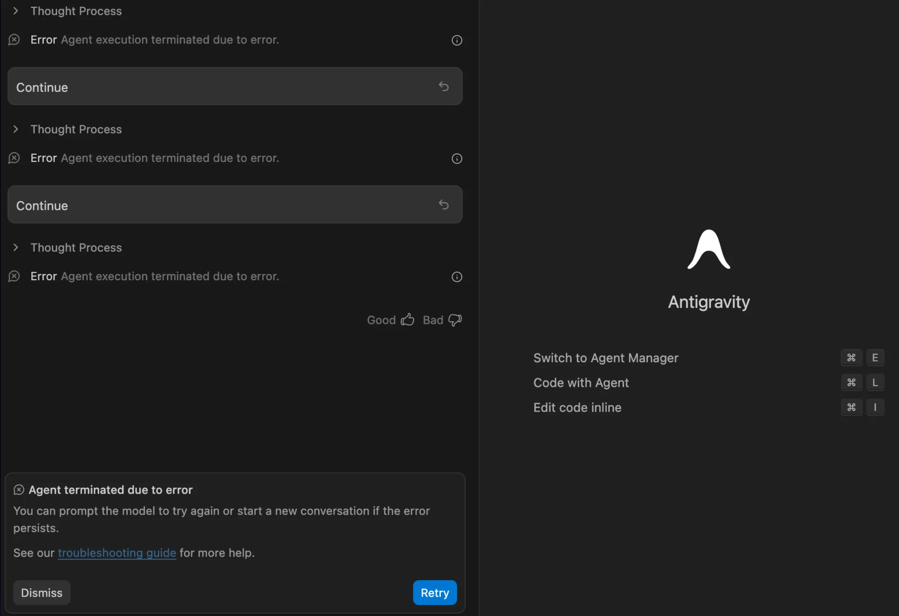

Antigravity Agent terminated due to error 完全解决指南
如果你在使用 Antigravity + Claude Opus 时频繁遇到 Agent terminated due to error 报错，这篇指南汇总了来自 Reddit、GitHub Issues 和 V2EX 社区的真实解决方案，帮你彻底搞定它。

1. 这个报错是什么意思？
Agent terminated due to error（也写作 Agent execution terminated due to error）是 Antigravity 的 AI 编程助手在执行任务时异常终止的错误提示。它意味着 Claude 模型正在处理你的请求，但在中途被强制中断了。
根据 GitHub Issues 和 Reddit r/ClaudeAI 的讨论，这是一个笼统的终止信号，真正原因可能包括网络超时、MCP 工具冲突、输入过大、配额用尽、或服务端临时故障。Antigravity 通常会提供 "Retry" 和 "Dismiss" 两个按钮，但很多用户反馈即使点击 Retry 也无法恢复。
💡 重要区分
如果你切换到 Gemini 模型可以正常工作，但 Claude 模型持续报错——那么问题很可能出在 MCP 工具冲突或网络连接，而不是 Antigravity 本身的 Bug。
2. 为什么中国用户特别容易遇到？
这与 Claude 模型的工作方式以及中国的网络环境直接相关：
-
①
SSE 长连接机制：Claude Opus 的回复使用 Server-Sent Events (SSE) 流式传输。一次复杂的代码生成可能持续 30 秒到 5 分钟。这要求网络连接在整个过程中不中断——但据 GitHub Issues 反馈，Claude Desktop 的客户端存在硬编码的 60 秒超时限制。
-
②
代理链路叠加超时：中国用户必须通过代理访问 Anthropic API。多数通用代理的空闲超时阈值在 30-60 秒，叠加 Claude 自身的处理延迟后，极易触发超时断连。V2EX 上的多个帖子证实了这一点。
-
③
MCP 工具放大问题：当启用多个 MCP 服务器时，每次工具调用都需要额外的网络往返。根据 Reddit 用户反馈，启用 5 个以上 MCP 工具时报错率显著上升，因为 Claude 会尝试处理所有潜在的工具调用，导致上下文溢出。
3. 五大根因分析
以下原因按社区反馈频率排序：
1 网络超时（最常见 ~70%）
代理节点延迟高或连接不稳定，SSE 流在传输中途断开。中国大陆用户的首要原因。
2 MCP 工具冲突
特定 MCP 工具与 Claude 模型存在已知冲突。Firebase MCP Tool #15（functions_get_logs）是社区确认的高频冲突源。
3 上下文过大 / Payload Too Large
读取大文件（>5MB）、过长的 grep 结果、或累积过多对话历史，触发 "Payload Too Large" 或 "Context Overflow"。
4 账户配额用尽（429 Too Many Requests）
Google 账户的 Claude API 使用量达到配额上限。错误日志中可能包含 429 状态码。切换 Google 账户可验证。
5 Antigravity 内部状态损坏
长时间使用后，本地缓存的对话历史或上下文状态文件可能损坏。Reddit 多个帖子反馈在 ~/.gemini/antigravity/conversations 中清理超大文件后恢复正常。
4. 七步排查法（经社区验证）
以下方法来自 Reddit、GitHub Issues 和 V2EX 社区的真实用户反馈，按推荐顺序排列：
第 1 步：禁用所有 MCP 服务器
打开 Agent sidebar（Ctrl+L），点击右上角三点菜单 → MCP servers → Manage MCP Servers，禁用全部。开一个新对话测试 Claude。
如果恢复正常，逐个重新启用 MCP 服务器找到冲突源。
functions_get_logs 工具（Tool #15）会导致 Claude Sonnet/Opus 崩溃。多个 Reddit 帖子和 GitHub Issue 已确认。
第 2 步：重置 Antigravity Onboarding
按 Cmd+Shift+P（Mac）或 Ctrl+Shift+P（Windows），输入：
Antigravity: Reset onboarding这会强制与 Google 服务器重新握手，不会删除聊天记录，是 Reddit 社区最推荐的快速修复之一。
第 3 步：清理本地缓存
关闭 Antigravity，然后清理可能损坏的本地文件：
# 备份后清理超大对话文件（>5MB）
find ~/.gemini/antigravity/conversations -size +5M -ls
# 清空上下文状态和临时文件
rm -rf ~/.gemini/antigravity/context_state/*
rm -rf ~/.gemini/antigravity/scratch/*重启 Antigravity 后重新测试。
第 4 步：减小输入体积
避免让 Claude 一次性处理过大的输入：
- 大文件分批提供，不要一次读取 >5MB 的文件
- 限制
grep结果行数 - 对话过长时开一个新会话
- 避免在 MCP 指令中写过长的系统 prompt
第 5 步：切换 Google 账号排查配额
如果错误日志中包含 429 Too Many Requests，可能是账户配额用尽。尝试在 Antigravity 中登出并切换到另一个 Google 账号，看是否恢复正常。
第 6 步：测试网络延迟
在终端运行以下命令，测试到 Anthropic API 的连接质量：
curl -o /dev/null -s -w "DNS: %{time_namelookup}s | Connect: %{time_connect}s | Total: %{time_total}s\n" https://api.anthropic.com如果 Total > 2 秒 或频繁超时，你的网络就是主要瓶颈。
第 7 步：使用开发者专线 ⭐
如果以上步骤无法根治，问题大概率出在代理层的连接保持能力上。GitHub Issues 中有开发者反馈 Claude Desktop 存在硬编码的 60 秒客户端超时，普通代理叠加后极易触发断连。
我们提供专为大模型开发环境优化的网络专线：
- ✅ 长连接保护——超时阈值 10 分钟+，专为 SSE / WebSocket 设计
- ✅ 低延迟直连——精选节点，到 Anthropic API 延迟 < 100ms
- ✅ 高带宽不限流——大文件传输毫无压力
- 🎁 免费试用 1 天，无需付款
5. 为什么普通代理解决不了？
大多数代理服务（包括常见的商业机场）是为短连接设计的——打开网页、看视频、刷社交媒体。这些场景的 HTTP 请求通常在几秒内完成。
但 Claude Opus 的工作方式完全不同：
当代理节点的空闲超时阈值（30-60 秒）碰上 Claude 60 秒的客户端超时，再加上高延迟造成的处理时间膨胀——三重叠加的结果就是 Agent terminated due to error。
我们的开发者专线将超时阈值设置为 10 分钟以上，并针对 SSE 流式传输做了专门优化——即使在 Claude 长时间"思考"期间没有数据传输，连接也不会被断开。
6. V2EX 社区推荐的代理方案
以下方案来自 V2EX 社区用户的真实反馈：
🔄 更换代理客户端
多位用户反馈从 v2rayN 切换到 Clash Verge 后问题有所缓解，可能与 Clash 的连接复用策略有关。
🌐 使用 Proxifier 全局代理
macOS 用户推荐使用 Proxifier 进行进程级代理，避免系统代理不完整导致的 DNS 泄漏和连接不稳定。
📍 选择静态住宅 IP 节点
部分用户发现使用静态住宅 IP（而非数据中心 IP）可以降低被 Anthropic 限速的概率，从而减少超时报错。
📶 路由器层面配置代理
将代理配置在路由器层面（如 OpenWrt + Clash），确保所有流量（包括 Antigravity 的后台连接）都走代理通道，避免 DNS 污染。
7. 常见问题
这条专线和普通机场有什么区别？ ▼
普通机场为浏览网页和视频优化，我们的专线针对大模型开发场景做了三个关键调整：
- 长连接超时阈值 10 分钟+（普通机场通常 30-60 秒）
- SSE/WebSocket 流式传输特殊处理，不会在"空闲"时断开
- 精选低延迟节点，到 Anthropic API 延迟 < 100ms
免费试用有什么限制？ ▼
没有功能限制。试用期 1 天，流量不限，速度不限，和付费用户完全一样。满意后通过 Telegram 续费即可。
如何配置到我的客户端？ ▼
联系 Telegram 后会收到一个订阅链接，复制到 Clash 或 V2ray 客户端中导入即可。全程不超过 2 分钟。
除了 Antigravity，还能用于其他 AI 工具吗？ ▼
可以。专线对所有需要长连接的 AI 开发工具都有效，包括 Claude Code、ChatGPT、GitHub Copilot、Cursor 等。
我该先排查 MCP 还是先解决网络？ ▼
建议先禁用 MCP 测试，因为这最简单（30 秒完成）。如果禁用后仍然报错，再排查网络问题。两者是独立的根因，有可能同时存在。